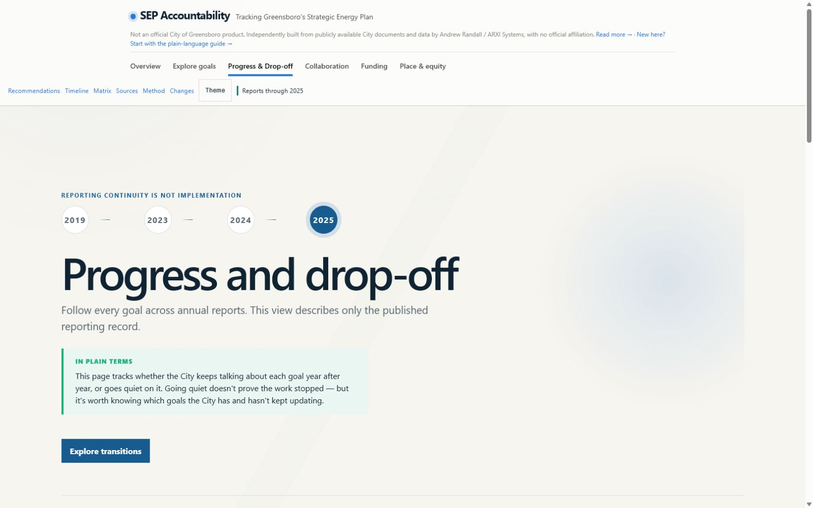
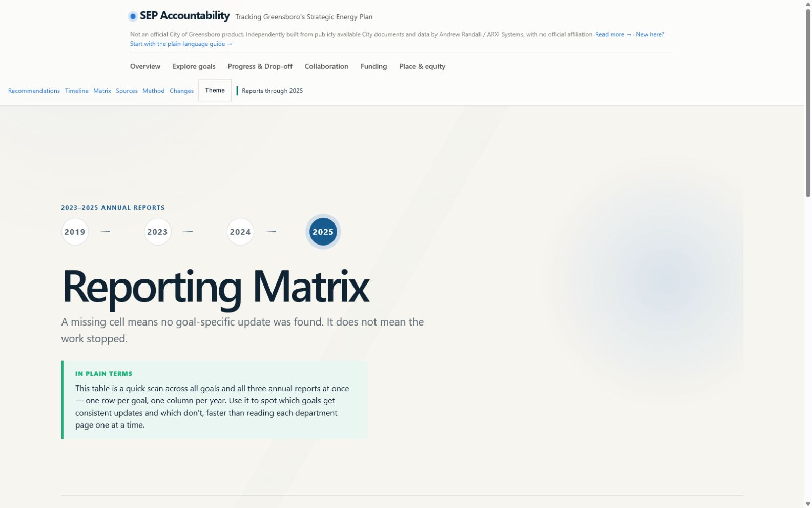
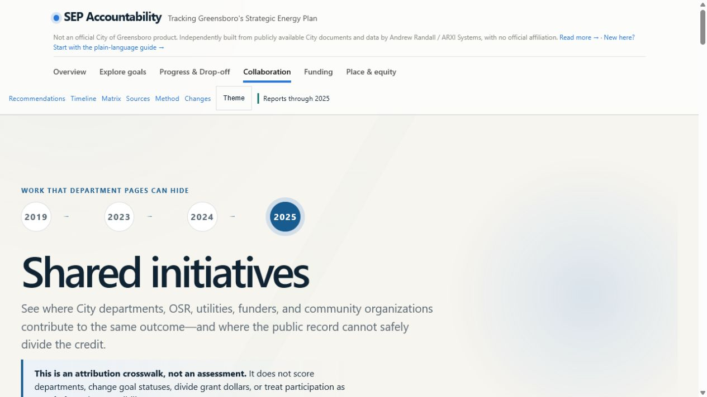

In development / Active build
Most relevant if: a public plan exists, but progress is difficult to follow across years and sources
Making it easier to see what was promised, what changed, and what still needs attention.
Greensboro’s energy commitments are spread across a long-term plan, three annual reports, funding records, votes, permits, and outside data. This active build brings that information together so residents, board members, staff, and decision-makers can find a clear answer without rebuilding the research themselves.
Board-informed civic work independently developed by Andrew Randall · Not commissioned by the board or City · Not a paid AKRD client engagement
Annual reporting for 2023, 2024, and 2025 matched goal by goal against the 2022 plan
Plan goals structured with reporting history, citations, and known information gaps
Core evidence stays readable even if an outside data service is temporarily unavailable
How the system helps
The goal is a trustworthy answer, not a technical showcase.
Each part of the build removes a specific obstacle that makes long-term public work difficult to understand.
- Matched across years
- Updates from different reports connect to the same goal, making it easier to see progress, silence, or conflicting information over time.
- Dependable public access
- The core record remains available when an outside website or data service is temporarily down, so people do not lose the evidence they came to review.
- Independent evidence
- Votes, awards, permits, transit records, and other public sources can support or challenge a claim without being mistaken for the City’s own reporting.
- Active build
- The tracker works today, but it will continue to improve as new reports, corrections, and verified records become available.
How board service became useful proof
Serving on the council revealed an information problem worth solving.
Through his service on the Greensboro Community Sustainability Council, Andrew saw how difficult it could be to follow a long-term public plan across annual reports, votes, funding records, permits, and outside measurements. The information was public, but answering a basic question—what has changed?—still required substantial research and context.
Andrew began building the tracker independently to explore a better approach. The board did not commission the tool, and the tracker does not speak for the council or the City. It demonstrates how AKRD identifies an operational information gap, organizes the evidence, and designs a clearer way for people to use it.
The proof is not simply a tracker. It is the ability to recognize a difficult information problem and turn it into a system people can understand.
Build status / August 2026
What people can use now. What still needs work.
The two columns make the project status easy to judge: working public capability appears on the left, while open research and development work stays clearly labeled on the right.
What’s built
- One history for every goal. Each of the 21 commitments connects to its 2023, 2024, and 2025 updates, so readers do not have to compare reports by hand.
- Different views for different questions. A reader can start with the overview, inspect one goal, compare every reporting year, follow funding, review shared initiatives, explore equity context, inspect recommendations, or check the source behind a statement.
- Clear labels for what can and cannot be claimed. The tracker separates promises, City-reported updates, outside evidence, calculations, contradictions, and missing information.
- Six outside checks for stronger context. Transit data, Council records, Census information, federal awards, air-quality readings, and building permits help test specific parts of the reported story.
- A correction and collaboration path. Staff and community reviewers can propose a sourced correction without changing the published record automatically. A private local review console keeps unpublished proposals separate from public facts.
- A broader public-record inventory. Current City records, federal-award updates, department information, and privacy-safe permit summaries are collected with dates, source links, and clear warnings where review is still pending.
- A public record designed to stay available. If an outside source temporarily fails, the last verified information remains readable instead of disappearing from the site.
What’s next
- Resolve priority reporting gaps. Review the three goals that stopped receiving goal-specific updates in 2025 and four goals whose target year passed without a verified outcome.
- Review the newly collected public records. The latest source refresh expands the evidence inventory, but discovered records must be reviewed before they can support a goal, project, funding link, or outcome.
- Add dependable electric-grid information. The connection to U.S. Energy Information Administration data is prepared, but it will not be labeled live until its first public snapshot is successfully verified.
- Keep the history current without rewriting it. Add new reports, meeting records, funding changes, corrections, and confirmed project decisions while preserving what earlier sources said.
Current build / Verified captures
See how the tracker answers four common questions.
These current live screens show how someone can understand the overall record, find goals that stopped receiving updates, compare all three reporting years, and see where multiple organizations contribute to the same result. They show today’s working build—not a finished product or proposed mockup.
OVERVIEWWhat does the latest reporting record say?
PROGRESSWhich goals keep receiving updates?

MATRIXWhere are the annual reporting gaps?

COLLABORATIONWho contributed when the work crosses organizational lines?

How trust is handled
A public tracker should show its limits as clearly as its findings.
The project does not treat silence as abandonment, does not invent goal-level funding links, and does not publish resident names, street addresses, or exact residential coordinates. Proposed corrections remain proposals until evidence supports publication.
QuestionCurrent ruleWhy it matters
Who said it?City reporting and outside evidence use different labelsVisitors can judge each source on its own terms
What if a source fails?The last valid checked-in snapshot remains availableA temporary outage does not erase the public record
What changes a status?A reviewed, cited record—not an automated guessAutomation can find leads without publishing conclusions
What remains private?Resident-level details and the local review consolePublic accountability does not require unnecessary exposure
What this demonstrates for a customer
The subject is energy. The service is turning scattered evidence into decisions people can trust.
Your organization does not need an energy plan to benefit from this approach. Agencies, boards, nonprofits, contractors, and public-facing programs face the same problem whenever commitments, progress, funding, and proof accumulate across years. AKRD can turn that material into a reporting system leadership, staff, partners, funders, and the public can actually use.
Turn documents into a working record
Connect plans, reports, milestones, funding, and source files to the same program or outcome.
Keep claims and evidence separate
Show what was promised, what was reported, what outside records support, and what cannot yet be concluded.
Make correction part of the system
Give staff and stakeholders a traceable way to propose, support, review, and publish factual changes.
Make the record easier to inspect
Translate technical detail into views that help different audiences find the decision, gap, or next question that matters to them.
Turn scattered reporting into a useful system
What important question does your information make too difficult to answer?
If your plans, reports, funding records, or results are spread across documents and systems, we can design a clearer way for the people who depend on that information to understand and use it.
Open the live SEP Tracker Talk about a similar public-data project